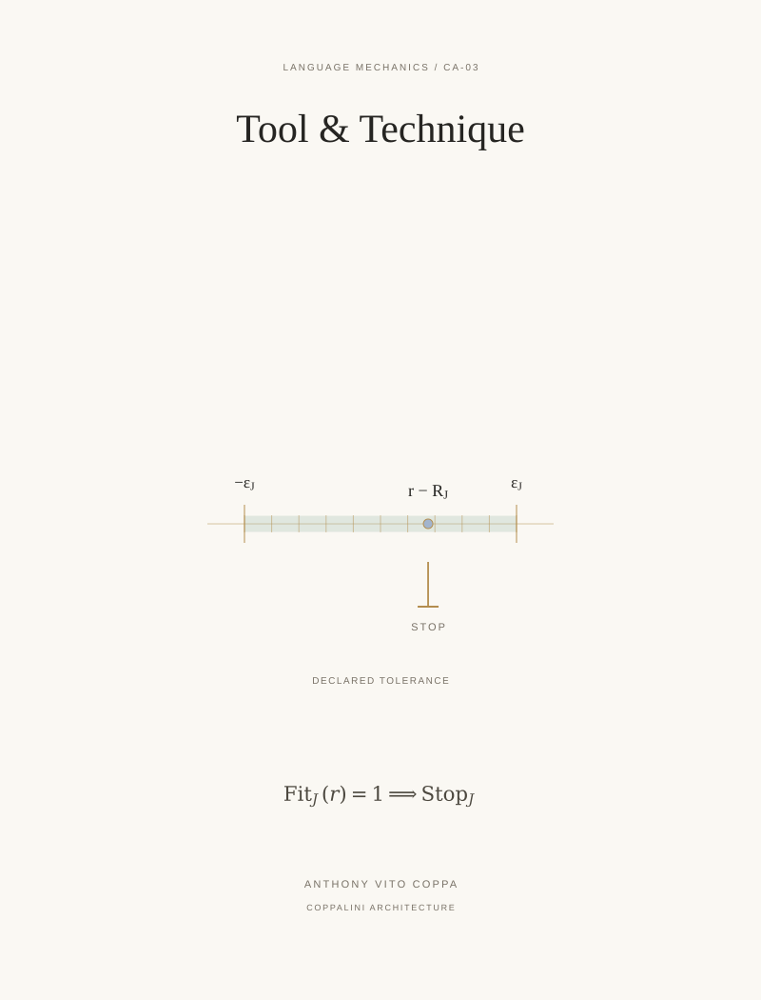

CA-03 / Formal-basis extension / COVER ARTWORK
Tool & Technique: Stopping Point & The Theory of Enough


A single measured read sits inside a declared tolerance interval. A fine terminal bar marks the point where this task stops.
CA-03 / Formal-basis extension / COVER ARTWORK

A single measured read sits inside a declared tolerance interval. A fine terminal bar marks the point where this task stops.